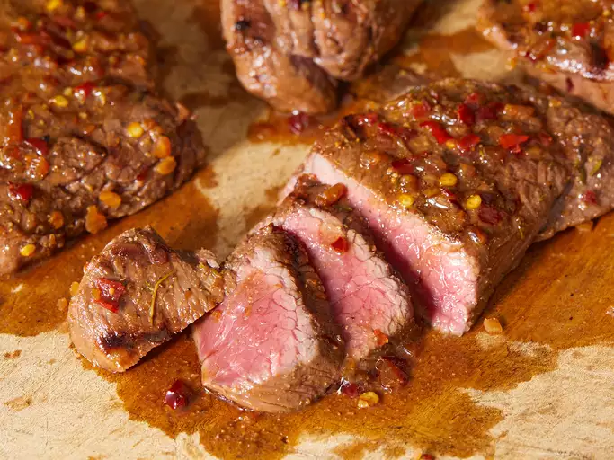

Marinated Venison Steak

recipe
ingredient list
- ¼ cup Worcestershire sauce
- 2 tablespoons soy sauce
- ½ lime, juiced
- 1 tablespoon dried minced onion
- 1 teaspoon red pepper flakes
- 1 teaspoon dry mustard
- ½ teaspoon Kosher salt
- ¼ teaspoon thyme
- ¼ teaspoon ground black pepper
- ¼ teaspoon dried, minced garlic
- 3 dashes hot pepper sauce (such as Tabasco®), or to taste
- 2 (4 ounce) venison steaks
steps
- Whisk together Worcestershire sauce, soy sauce, lime juice, onion, red pepper flakes, dry mustard, salt, thyme, black pepper, garlic, and hot pepper sauce in a bowl; pour into a resealable plastic bag.
- Add venison steaks, coat with marinade, squeeze to remove excess air, and seal the bag. Marinate in the refrigerator for at least 1 hour.
- Preheat an outdoor grill for medium-high heat and lightly oil the grate. Remove venison from marinade and shake off excess. Discard remaining marinade
- Cook steaks on the preheated grill until they are firm, hot in the center, and just turning from pink to grey, about 5 minutes per side. An instant-read thermometer inserted into the center should read 150 degrees F (65 degrees C).